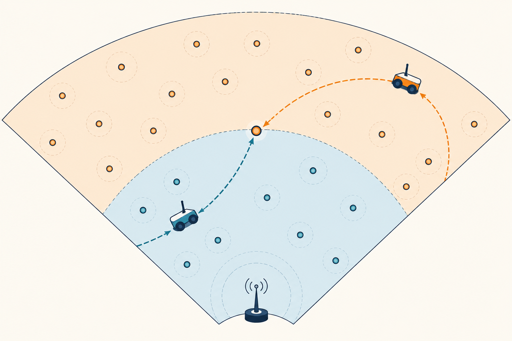

AI Planning · Reinforcement Learning · Neural-Guided Search
I am Liang-Ching Tao, an M.S. graduate in Computer Science and Engineering from National Chung Hsing University, Taiwan, advised by Prof. Pi-Chung Wang. I study how learned policies and neural representations can guide search in large, structured decision spaces.
I am preparing for Fall 2027 PhD applications in AI planning, sequential decision-making, reinforcement learning, and learning-guided search.
Aug. 2026 — M.S. in Computer Science and Engineering, National Chung Hsing University, Taiwan.
Four first-author works accepted for MAMM 2026: 1 oral and 3 posters, scheduled for Nov. 5–7, 2026.
HQARRF and LP-BTS preprints available on arXiv.
Selected research
Selected research
01
Ongoing · Sep. 2026–present
Learning-Guided Multi-Charger Planning with Neural-Guided Search
Multiple chargers must coordinate coupled scheduling decisions over structured action spaces. This ongoing extension builds on LP-BTS through graph-based policy representations, canonical actions, action-space reduction, and neural-guided search.
02
Research project · 2026–present
Learning-Guided Planning in Large Dynamic Action Spaces: Budgeted Tree Search for One-to-Many Mobile Charging
One charger must choose service stops from a large, changing set while travel and charging decisions have long consequences. LP-BTS combines a graph proposal policy and learned value critic with edge-budgeted PUCT to guide bounded search.
HQARRF: Hierarchical Q-learning and Force-aware Routing for Multi-Charger Scheduling
Multi-charger scheduling must balance routing, charging, and allocation decisions. A two-level framework uses Q-learning for regions or scheduling decisions and force-aware routing for charger movement.
“DTSC: A Dual-Tier Sector-Based Cooperative Mobile Charging Scheme for Wireless Rechargeable Sensor Networks”
Liang-Ching Tao, Po-Cheng Fu, Pi-Chung Wang
MAMM 2026 · Sun Moon Lake Teachers' Hostel, Taiwan · Nov. 5–7, 2026

PosterAccepted for poster presentation
“CHASE: A Corridor-Heuristic Charging Scheduler for Ground and Aerial Vehicles in Wireless Rechargeable Sensor Networks”
Liang-Ching Tao, Wei-Chen Lin, Pi-Chung Wang
MAMM 2026 · Sun Moon Lake Teachers' Hostel, Taiwan · Nov. 5–7, 2026
Research trajectory
From structured scheduling to learning-guided search.
01Structured scheduling
Coupled charging, routing, and allocation.
02Hierarchical RL
Master’s thesis on multi-charger scheduling.
03Learning-guided tree search
LP-BTS for one-to-many charging.
04Multi-charger planning
Ongoing neural-guided extension.
About
Research perspective
My research began with multi-charger scheduling in wireless rechargeable sensor networks, where coupled routing, charging, and allocation decisions made hierarchical decomposition essential.
I study learning and search as a joint system through end-to-end planning utility, controlled baselines, ablations, reproducible simulations, and attention to failure modes.